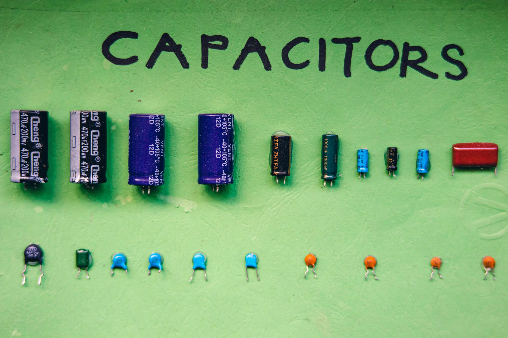

MLCC 소재 공급망, AI 수요로 중국서 급속 확대

'전자산업의 쌀'로 불리는 적층세라믹콘덴서(MLCC)의 핵심 소재 공급망이 AI 수요 폭증을 발판으로 중국에서 급속히 확장되고 있다고 사우스차이나모닝포스트(SCMP)가 보도했다. AI 서버와 고성능 컴퓨팅 장비에 탑재되는 MLCC 수요가 폭발적으로 늘면서, 원재료 공급 능력 확보 경쟁이 치열해지고 있다.
MLCC는 스마트폰 한 대에 1,000개 이상, AI 서버 한 대에는 수만 개가 탑재되는 수동 전자부품이다. 최근 AI 가속기 수요 급증과 함께 고용량·고신뢰성 MLCC 수요가 가파르게 증가하고 있으며, 이에 따라 핵심 원료인 바륨티타네이트(BaTiO3) 등 유전체 세라믹 소재의 공급 부족 우려가 커지고 있다.
SCMP에 따르면 중국 최대 기능성 세라믹 소재 기업 중 하나인 산둥 시노세라 펑셔널 머티리얼스(Shandong Sinocera Functional Materials)는 최근 대규모 설비 증설을 결정했다. 이 회사는 글로벌 MLCC 제조사들의 주요 원료 공급업체로, 일본 무라타·TDK, 한국 삼성전기·SEMCO에도 소재를 납품하고 있다.
중국 MLCC 소재 기업들의 증설은 단순한 양적 확대를 넘어 기술 수준 향상도 동반하고 있다는 점이 주목된다. AI 서버용 고용량 MLCC에는 유전체 입자 크기를 수십 나노미터 수준으로 정밀 제어해야 하는 고난도 기술이 요구되는데, 중국 업체들이 이 영역에 빠르게 진입하고 있다.
한국 입장에서 이 흐름은 양날의 검이다. 삼성전기를 비롯한 국내 MLCC 제조사들은 고부가 제품에서 기술 우위를 유지하고 있지만, 원재료 소재를 중국에서 일부 조달하는 구조이기 때문이다. 중국 소재 기업의 기술력 향상은 원료 수급 안정에는 유리하지만, 장기적으로는 중국 MLCC 완제품의 경쟁력 강화로 이어질 수 있다.
실제로 현재 글로벌 MLCC 시장은 일본 무라타(약 35% 점유)가 선두를 달리고 있으며, 삼성전기가 약 20%로 2위다. 중국 야게오·화신과 같은 로컬 업체들은 범용 제품에서 빠르게 점유율을 높이고 있으며, 소재 내재화가 완료되면 고부가 영역까지 공략할 여력이 생긴다.
AI 수요가 MLCC 시장에 미치는 파급 효과는 수치로도 확인된다. 업계 조사기관 IDC에 따르면 AI 서버 한 대에 필요한 MLCC는 일반 서버 대비 3~5배 많은 것으로 분석된다. 2025년 AI 서버 출하량이 전년 대비 40% 이상 증가한 것을 감안하면, MLCC 수요 증가분만도 수십억 개에 달하는 규모다.
국내 소재 기업들의 대응도 주목된다. 파트론, 아모텍 등 국내 MLCC 소재·부품 기업들은 차별화된 고온·고압·고주파용 특수 MLCC 원료 개발에 집중하고 있다. 범용 소재에서 중국과의 가격 경쟁을 피하고, 고성능 특화 영역에서 수익성을 지키는 전략이다.
정책 당국도 이 흐름에 주목하고 있다. 산업통상자원부는 MLCC를 포함한 수동부품 소재를 전략 소재 국산화 대상 목록에 포함시키고, 기술 개발 과제를 지원하고 있다. 하지만 예산 규모나 지원 체계가 일본·중국에 비해 충분하지 않다는 업계 지적이 이어지고 있다.
전문가들은 이번 사태가 한국 소재 산업에 경고 신호를 보내고 있다고 진단한다. 한 업계 관계자는 '소재 공급망은 한 번 특정 국가에 의존하게 되면 바꾸기 매우 어렵다'며 '지금 투자하지 않으면 5년 후 MLCC 소재 시장에서 한국의 입지가 크게 약화될 수 있다'고 경고했다.
향후 시장 전망은 낙관과 우려가 교차한다. AI 수요 지속으로 MLCC 시장 자체는 2030년까지 연평균 8~10% 성장이 예상되지만, 소재 공급망의 중국 집중이 심화되면 공급 리스크도 동반 상승한다. 소재 자립 역량을 갖춘 기업과 그렇지 않은 기업 간의 경쟁력 격차가 더욱 벌어질 것으로 예상된다.